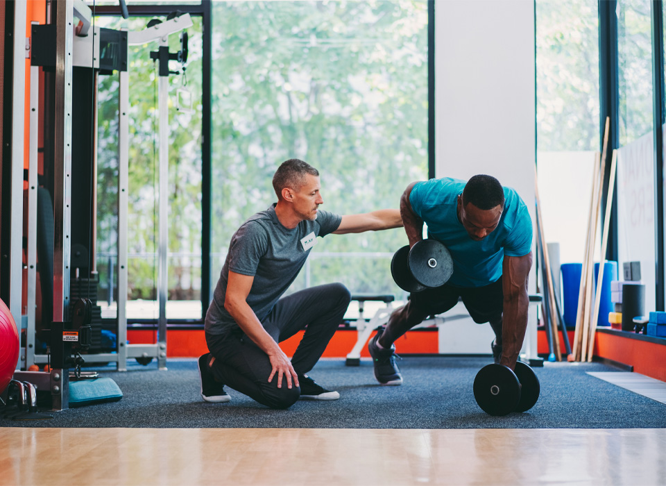

Weightlifting Safety Tips

Safety should always be your number one priority when lifting. Using proper form, listening to your body, and progressing slowly are key to long-term success without injury.
Top 10 Safety Tips
- ✅ Warm up properly with dynamic stretches and light cardio.
- ✅ Use correct form—never sacrifice technique for heavier weight.
- ✅ Start light and gradually increase resistance.
- ✅ Use a spotter or safety bars when lifting heavy.
- ✅ Rest—muscles grow during recovery.
- ✅ Breathe properly—exhale during the exertion phase.
- ✅ Wear appropriate attire-wear close-toed shoes for grip and stability.
- ✅ Stay hydrated before, during, and after all of your workouts.
- ✅ Listen to your body—stop if you feel pain.
- ✅ Clean up weights and avoid gym hazards.
Taking a few extra minutes to lift safely can prevent months or years of recovery. Stay smart, stay strong!